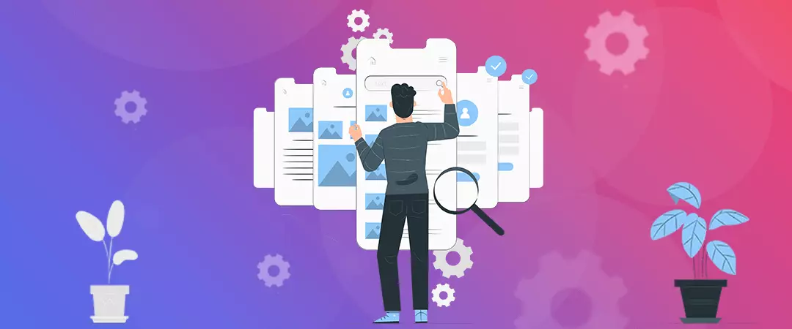
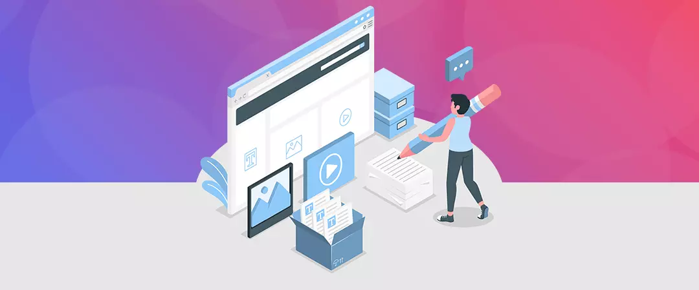
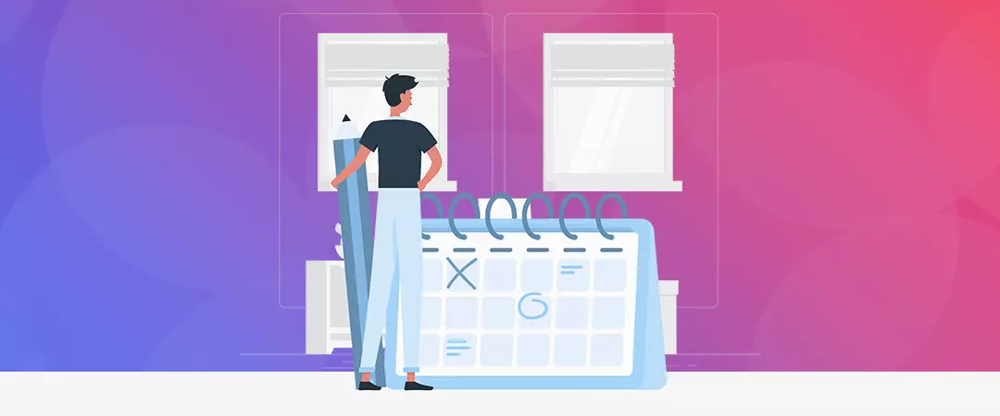
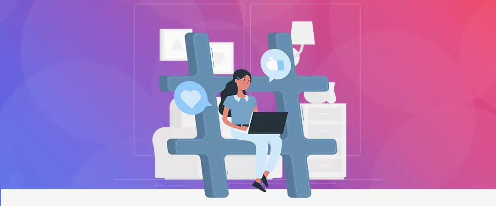
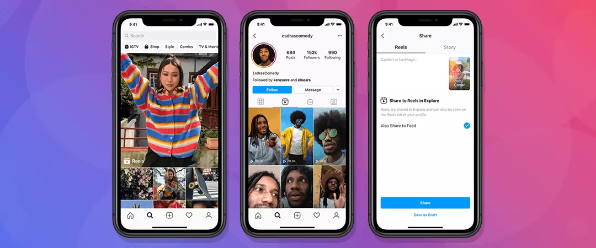
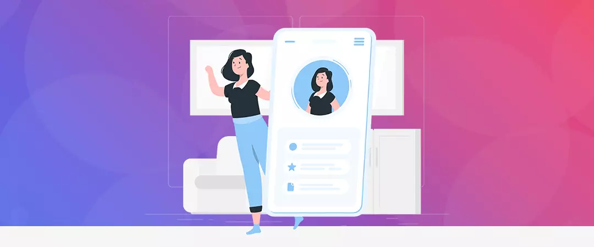
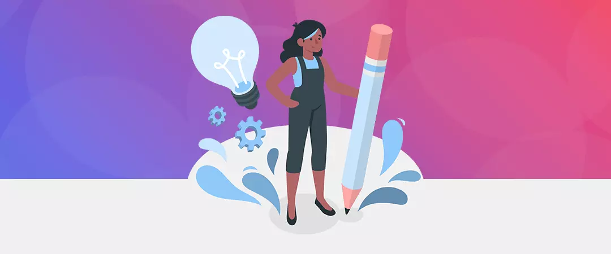
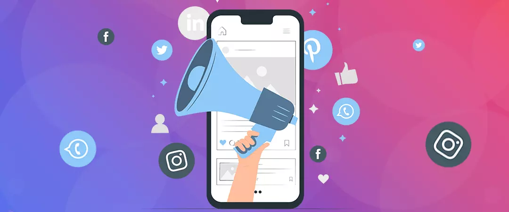
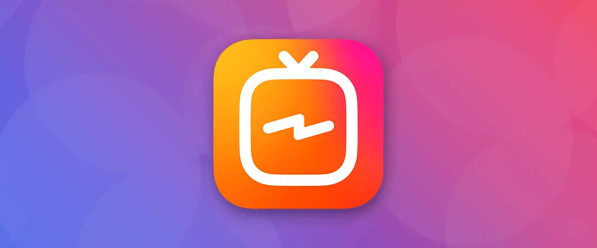

If you clicked through this title and landed here, you are probably looking to find some tips or hacks that will help you grow Instagram handle reach the 1000 milestone on your Instagram account and consequently, get a step closer towards establishing yourself as an authority in your niche.
First of all, let me assure you, you have ended up in just the right place as I am going to breakdown this tedious- looking yet rather simple process of gaining followers on Instagram in this blog!
Stay tuned!
Contents
- 1. Content is KING (for real!)
- 2. Post Consistently
- 3. Utilize the right #hashtags
- 4. Get real with Reels
- 5. Optimize your profile
- 6. Be active during PEAK hours
- 7. Cap it off with a catchy caption
- 8. Interaction is a two- way street
- 9. Cross- Platform Promotion pays off
- 10. Use IGTV to attract newer audience
How to grow Instagram handle and get first 1000 followers fast
The best way is to walk the organic path of growth and let the Instagram algorithm come through for you and your content. The other way to get your first 1000 followers quickly is to buy Instagram followers who are real and legit Instagram users. Since these are real people, they engage with your content in terms of likes, shares, saves, & comments and thus contribute in further organic growth of your Instagram handle.
Keep reading as I breakdown how anyone can do wonders for their Instagram handle and watch it grow & spread wings!
But first, I believe it’s crucial to understand what the Instagram algorithm wants from creators?
How does Instagram algorithm work?

Instagram relies on machine learning when it comes to algorithm. It curates a unique feed for each user consisting of content they have previously engaged with. The Instagram algorithm wants users to spend as much time as possible on its platform. The pages that produce great engagement and encourage users to spend more time on this platform get organic boost from Instagram algorithm. Thus, following the best practices can help you get Instagram followers fast(https://www.realsubscribers.com/buy-instagram-followers.html).
Here are the top 10 tips that will help you grow your Instagram and get the 1000 followers
1. Content is KING (for real!)

You must have heard people stating the above, but when it comes to growing your Instagram handle, it stands 100% true. For people wondering – how long does it take to get 1000 followers on Instagram, this is your answer. While browsing through the internet multiverse, you will come across a dozen different tips to amplify up your content game, but I have found the following 3 to be most useful to get 1000 followers on Instagram:
Create audience- specific content
In order to create audience specific content, focus on three factors- the purpose of your page, who are your target audience, and how you will present your content to them.
Maintain an aesthetic throughout your feed
Your first impression makes all the difference. Whenever a user visits your profile, they decide within 5 seconds whether or not they wish to follow your page. Hence, creating an aesthetic theme for your page can be very helpful to grow Instagram page organically.
Create carousels
Instagram allows you to add up to 10 images in a single post. This makes carousels a great option if you wish to create a thread or a lesson on your page.
2. Post Consistently

Importance of posting consistently
People only follow you for your content. If you don’t post consistently, your followers will not think twice before ‘un’following you. But on the other hand, if you publish regularly- multiple times a week, even if your potential viewer misses one post from you, they can stumble upon another.
Create an upload schedule
By creating an upload schedule, you find a balanced pace between how often you should create content & post and how often you can in order to maintain the quality of your posts. Posting consistently is your answer to the question - how to go from 0 to 1000 followers on Instagram.
3. Utilize the right #hashtags

Why are hashtags so important
You must have heard about this about a million times over by now. Yes, that’s how important using relevant hashtags are. Hashtags act like the common thread that will connect you to like-minded people, your target audience and potential followers. In short – hashtags help you get discovered by gaining exposure.
How to find and use the right hashtags
Instagram allows you to add up to 30 hashtags in each post. In order to find hashtags that are not too cluttered up, use hashtags used in 100,000 posts or less. Moreover, use high quality hashtags to avoid gaining low quality followers. Thus, hashtags help you to easily get 1000 followers on Instagram.
4. Get real with Reels

What is Instagram Reels
Instagram Reels is the latest feature addition on this platform, that allows users to create short, vertical videos with multiple AR filters, speed manipulation and a huge library of music to choose from.
How can Reels help you gain followers
First of all, creating Reels requires much less effort & time and it is also great way to get more interactive with your community. Reels gain an insane amount exposure through the Explore Section if the right hashtags are used. Brands such as Louis Vuitton gain over 7 million views through Reels each month. Reels are proving to be a smooth path for users to get 1000 real followers on Instagram.
5. Optimize your profile

Your profile has the power to push a visitor who is on the fence into following your page and thus, help in Instagram page growth by helping you get followers on Instagram.
Use a unique, catchy yet searchable profile name-
Create a username for your Instagram handle that intrigues users but on the other hand is also easily memorized and searchable. Use your name or your brand name as your profile name.
Create Bio
Only add to your bio what adds value to your Instagram page. Also use relevant hashtags in your bio and finish with a quote or saying that summarizes your brand purpose.
Profile picture
Use a profile picture which justifies your brand. You can either use your brand logo or a high- resolution headshot as your profile picture.
6. Be active during PEAK hours
Peak hours are the duration during which your followers and target audience is most active on the platform of Instagram. Thus, being active during peak hours is crucial. Here’s how – if you post during peak hours, you will gain the largest engagement possible on your page in terms of likes / comments / saves / shares. Moreover, you get the most replies to your stories and you get the chance to converse with your followers in the comment section. This increases the engagement on your Instagram page, which help you in reaching 1k followers on Instagram.
7. Cap it off with a catchy caption

Keep reading to find out how great captions contribute in increasing engagement on your page and helps you gain followers in 5 minutes.
Why are writing good captions important-
One of the most profound ways to stand out from the rest of your competitors is to write a caption that has the ability to provoke a though in your viewer’s mind and consequently, linger on.
Call to Action
Your caption should contain a CTA to like, share, save your post and follow your Instagram page. You can also ask questions in your caption to spark comments. This is a great way to increase your organic reach and give your profile a boost.
Emojis
This point may seem irrelevant to some. But in all honesty, using emojis is the easiest way for you to seek attention, make a user stop scrolling and see what you have to say.
Hashtags
Using relevant, high- quality hashtags in your caption makes your content more discoverable. Make sure you use different hashtags with different posts. By using more specific and focussed hashtags, you can attract high quality traffic.
8. Interaction is a two- way street
If you are not interacting with your audience on Instagram, there is no point of you being present on this platform. Being the creator, you have to take the first step and initiate a conversation with your followers. Now you must be wondering – How do I do that? Here are a few ways in which you can effortlessly interact with your audience, increase the engagement rate on your account and get closer to your goal and help you get 1000 followers in a week-
Through your caption
As mentioned earlier in this blog, in order to spark a conversation with your followers, simply drop a question for them in your caption, to which they will reply through comments. This gives you an amazing opportunity to reply to their comments and get to know them.
Through stories-
Instagram stories are a great way to interact with your audience without giving it much effort. You can hold polls, as questions etc., in your stories that will encourage them to reply and interact, increasing the engagement on your account.
Through hashtags
Follow hashtags relevant to your niche and find worthy posts associated with it and comment upon them. Why is this necessary? Well, users following, liking, commenting upon those posts are your potential followers. By doing so, you get more exposure and get recognised in your community.
9. Cross- Platform Promotion pays off

Cross- platform promotion means promoting your Instagram page, posts, etc., on other social media platforms such as Facebook and Pinterest. By leveraging social media platforms like so, you gain the maximum exposure and attract high quality traffic on your Instagram page and consequently, gain new followers on Instagram easily.
10. Use IGTV to attract newer audience

IGTV is a great way for Instagram users to create and share videos that are up to 60 minutes long. Earlier the limit for adding videos to Instagram was 1 minute. Just like Reels and static posts, IGTV videos can also be found through the Explore Section as well as through hashtags as well. Its great to have a mix of static posts and videos on your Instagram page, and IGTV is a great way to achieve that. Through IGTV, you can attract potential followers who prefer videos over static posts and get closer to your goal of 1000 followers through organic Instagram page growth.
I hope you found this as a relevant guide on “How to gain 1000 followers on Instagram”. Feel free to share.